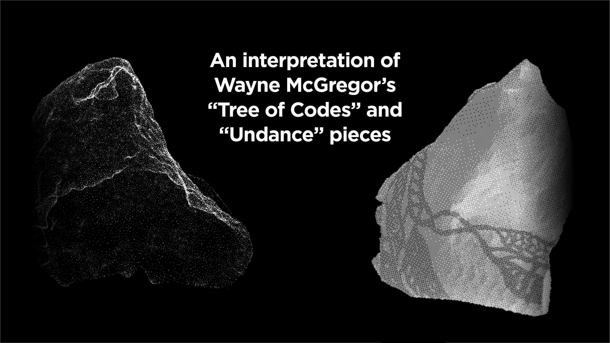

interpretation of Wayne McGregor’s “Tree of Codes” and “Undance” pieces
Motion Graphics
Image and Video Manipulation
3D Scanning
2022
A group university briefing, in which we got the pleasure to have the partnership of Wayne McGregor Studio.
The outcomes of this project are two experimental proposals, reflecting on the choreographer Wayne McGregor’s
pieces “Tree of Codes” and “Undance”.
The project was developed, in collaboration, with graphic designers Cameron Aitken and Imogen Ashby. We explored
different video manipulation software like EbSynth, Touch Designer, Blender, and After Effects; and reflected
on the physicality of choreography and its stage interpretation.
We developed two separate videos, focusing on each performative piece and embracing Wayne McGregor's vision of
using technology to enhance outcomes.